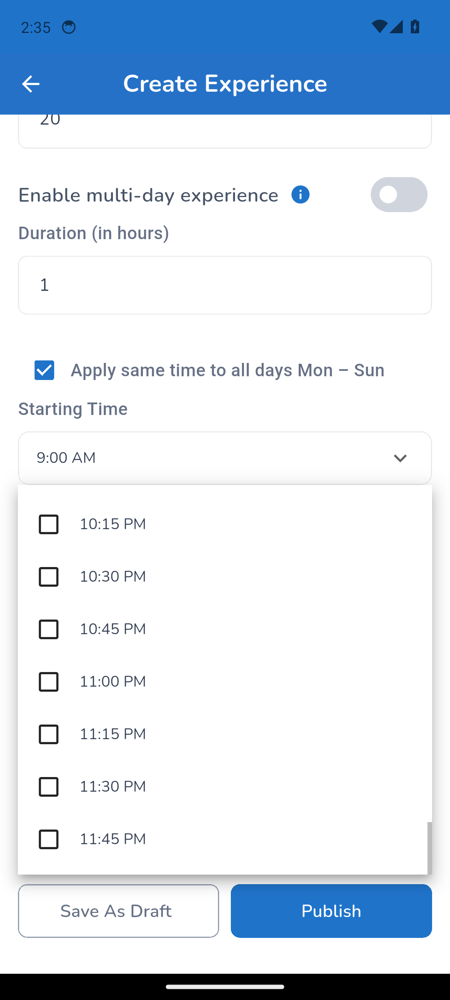
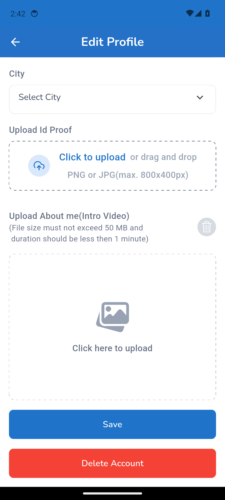
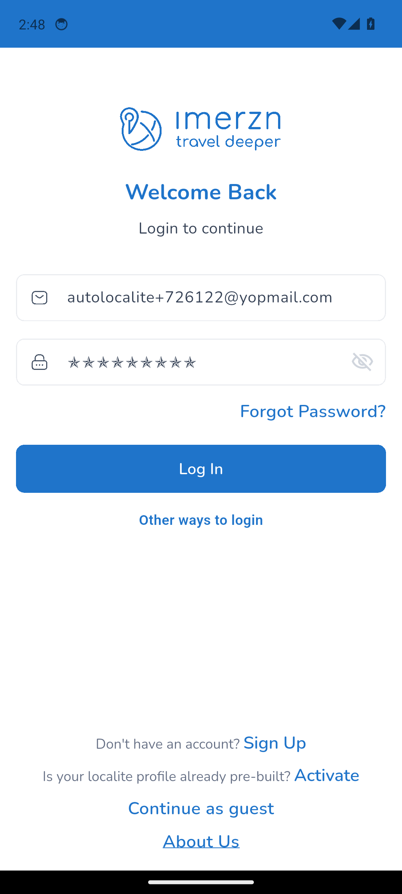
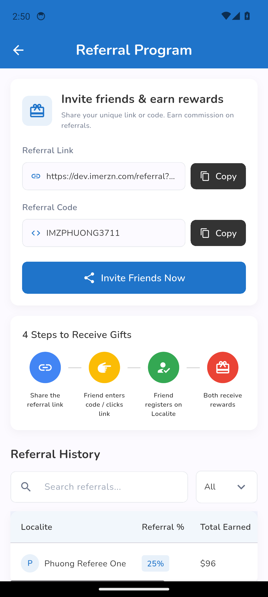
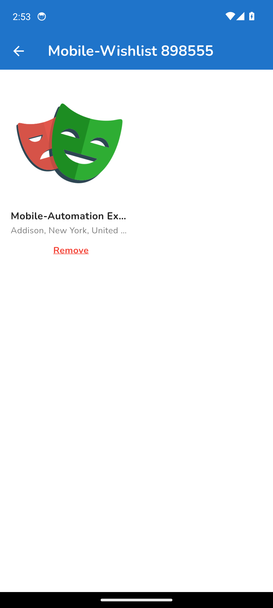

Mobile test report
Spec Files: 9 passed, 11 retries, 10 failed, 19 total (100% completed) in 00:26:32
Full test log · Passwords are masked. Element trees and the Appium log are in the run's mobile-test-results artifact.
1. mobile EXP-002 | Localite creates and publishes an experience
tests/localite/mobile-create-experience.spec.ts
Error: Step "Fill in the Create Experience form" failed: element ("(//*[starts-with(@content-desc, "Photo")])[1]") still displayed after 20000ms
at step (/home/runner/work/Imerzn-MobileTest/Imerzn-MobileTest/helpers/mobile-step.ts:11:11)
at async Context.<anonymous> (/home/runner/work/Imerzn-MobileTest/Imerzn-MobileTest/tests/localite/mobile-create-experience.spec.ts:34:5)

2. mobile EXP-002 | Localite creates and publishes an experience
tests/localite/mobile-create-experience.spec.ts
Error: Step "Fill in the Create Experience form" failed: element ("//android.widget.Button[@content-desc="1:30 PM"]") still not displayed after 5000ms
at step (/home/runner/work/Imerzn-MobileTest/Imerzn-MobileTest/helpers/mobile-step.ts:11:11)
at async Context.<anonymous> (/home/runner/work/Imerzn-MobileTest/Imerzn-MobileTest/tests/localite/mobile-create-experience.spec.ts:34:5)

3. mobile PRF-002 | Localite edits name, bio, and hosted experiences
tests/localite/mobile-edit-profile.spec.ts
Error: Step "Save the profile" failed: The profile was not saved: still on "Edit Profile" after Save.
at step (/home/runner/work/Imerzn-MobileTest/Imerzn-MobileTest/helpers/mobile-step.ts:11:11)
at async Context.<anonymous> (/home/runner/work/Imerzn-MobileTest/Imerzn-MobileTest/tests/localite/mobile-edit-profile.spec.ts:37:5)

4. mobile PRF-002 | Localite edits name, bio, and hosted experiences
tests/localite/mobile-edit-profile.spec.ts
Error: Step "Save the profile" failed: The profile was not saved: still on "Edit Profile" after Save.
at step (/home/runner/work/Imerzn-MobileTest/Imerzn-MobileTest/helpers/mobile-step.ts:11:11)
at async Context.<anonymous> (/home/runner/work/Imerzn-MobileTest/Imerzn-MobileTest/tests/localite/mobile-edit-profile.spec.ts:37:5)

5. mobile PRF-001 | Localite previews the profile and goes back
tests/localite/mobile-preview-profile.spec.ts
Error: No created experience/gallery recorded for autolocalite+726122@yopmail.com. Run the mobile Create Experience and Create Gallery tests first.
at Context.<anonymous> (/home/runner/work/Imerzn-MobileTest/Imerzn-MobileTest/tests/localite/mobile-preview-profile.spec.ts:15:13)

6. mobile PRF-001 | Localite previews the profile and goes back
tests/localite/mobile-preview-profile.spec.ts
Error: No created experience/gallery recorded for autolocalite+726122@yopmail.com. Run the mobile Create Experience and Create Gallery tests first.
at Context.<anonymous> (/home/runner/work/Imerzn-MobileTest/Imerzn-MobileTest/tests/localite/mobile-preview-profile.spec.ts:15:13)

7. mobile SET-002 | Localite changes the password and logs in with it
tests/localite/mobile-localite-settings.spec.ts
Error: Step "Log in with the new password" failed: element ("~Profile") still not displayed after 60000ms
at step (/home/runner/work/Imerzn-MobileTest/Imerzn-MobileTest/helpers/mobile-step.ts:11:11)
at async Context.<anonymous> (/home/runner/work/Imerzn-MobileTest/Imerzn-MobileTest/tests/localite/mobile-localite-settings.spec.ts:45:5)

8. mobile SET-002 | Localite changes the password and logs in with it
tests/localite/mobile-localite-settings.spec.ts
Error: Step "Log in as localite" failed: element ("~Profile") still not displayed after 60000ms
at step (/home/runner/work/Imerzn-MobileTest/Imerzn-MobileTest/helpers/mobile-step.ts:11:11)
at async Context.<anonymous> (/home/runner/work/Imerzn-MobileTest/Imerzn-MobileTest/tests/localite/mobile-localite-settings.spec.ts:29:5)

9. mobile REF-001 | Referral program: referrer earns Referral % of the commission and withdraws it
tests/localite/mobile-referral-program.spec.ts
Error: Step "Referrer: check Referral History" failed: Can't call getAttribute on element with selector "//*[contains(@content-desc, "
Phuong Referee One")]/following-sibling::*[3]" because element wasn't found
at step (/home/runner/work/Imerzn-MobileTest/Imerzn-MobileTest/helpers/mobile-step.ts:11:11)
at async Context.<anonymous> (/home/runner/work/Imerzn-MobileTest/Imerzn-MobileTest/tests/localite/mobile-referral-program.spec.ts:56:5)

10. mobile REF-001 | Referral program: referrer earns Referral % of the commission and withdraws it
tests/localite/mobile-referral-program.spec.ts
Error: Step "Referrer: check Referral History" failed: Can't call getAttribute on element with selector "//*[contains(@content-desc, "
Phuong Referee One")]/following-sibling::*[3]" because element wasn't found
at step (/home/runner/work/Imerzn-MobileTest/Imerzn-MobileTest/helpers/mobile-step.ts:11:11)
at async Context.<anonymous> (/home/runner/work/Imerzn-MobileTest/Imerzn-MobileTest/tests/localite/mobile-referral-program.spec.ts:56:5)

11. mobile BKG-001 | Traveler books the created experience: 2 paid and 2 pending
tests/flows/booking/mobile-01-experience-booking.spec.ts
Error: No experience recorded for the mobile localite. Run mobile EXP-002 first.
at Context.<anonymous> (/home/runner/work/Imerzn-MobileTest/Imerzn-MobileTest/tests/flows/booking/mobile-01-experience-booking.spec.ts:33:13)

12. mobile BKG-001 | Traveler books the created experience: 2 paid and 2 pending
tests/flows/booking/mobile-01-experience-booking.spec.ts
Error: No experience recorded for the mobile localite. Run mobile EXP-002 first.
at Context.<anonymous> (/home/runner/work/Imerzn-MobileTest/Imerzn-MobileTest/tests/flows/booking/mobile-01-experience-booking.spec.ts:33:13)
13. mobile DSH-002 | Bookings and Transaction History show the paid and pending bookings
tests/flows/booking/mobile-02-traveler-bookings-after-bookings.spec.ts
Error: No bookings found (/home/runner/work/Imerzn-MobileTest/Imerzn-MobileTest/testdata/traveler/mobile-created-bookings.json). Run the mobile booking test first: tests/flows/booking/mobile-01-experience-booking.spec.ts
at readMobileCreatedBookings (/home/runner/work/Imerzn-MobileTest/Imerzn-MobileTest/data/state/mobile-created-bookings.ts:37:11)
at Context.<anonymous> (/home/runner/work/Imerzn-MobileTest/Imerzn-MobileTest/tests/flows/booking/mobile-02-traveler-bookings-after-bookings.spec.ts:20:37)

14. mobile DSH-002 | Bookings and Transaction History show the paid and pending bookings
tests/flows/booking/mobile-02-traveler-bookings-after-bookings.spec.ts
Error: No bookings found (/home/runner/work/Imerzn-MobileTest/Imerzn-MobileTest/testdata/traveler/mobile-created-bookings.json). Run the mobile booking test first: tests/flows/booking/mobile-01-experience-booking.spec.ts
at readMobileCreatedBookings (/home/runner/work/Imerzn-MobileTest/Imerzn-MobileTest/data/state/mobile-created-bookings.ts:37:11)
at Context.<anonymous> (/home/runner/work/Imerzn-MobileTest/Imerzn-MobileTest/tests/flows/booking/mobile-02-traveler-bookings-after-bookings.spec.ts:20:37)

15. mobile LBK-001 | Localite sees the traveler bookings, transactions, and earnings
tests/flows/booking/mobile-03-localite-bookings-after-bookings.spec.ts
Error: No bookings found (/home/runner/work/Imerzn-MobileTest/Imerzn-MobileTest/testdata/traveler/mobile-created-bookings.json). Run the mobile booking test first: tests/flows/booking/mobile-01-experience-booking.spec.ts
at readMobileCreatedBookings (/home/runner/work/Imerzn-MobileTest/Imerzn-MobileTest/data/state/mobile-created-bookings.ts:37:11)
at Context.<anonymous> (/home/runner/work/Imerzn-MobileTest/Imerzn-MobileTest/tests/flows/booking/mobile-03-localite-bookings-after-bookings.spec.ts:22:37)

16. mobile LBK-001 | Localite sees the traveler bookings, transactions, and earnings
tests/flows/booking/mobile-03-localite-bookings-after-bookings.spec.ts
Error: No bookings found (/home/runner/work/Imerzn-MobileTest/Imerzn-MobileTest/testdata/traveler/mobile-created-bookings.json). Run the mobile booking test first: tests/flows/booking/mobile-01-experience-booking.spec.ts
at readMobileCreatedBookings (/home/runner/work/Imerzn-MobileTest/Imerzn-MobileTest/data/state/mobile-created-bookings.ts:37:11)
at Context.<anonymous> (/home/runner/work/Imerzn-MobileTest/Imerzn-MobileTest/tests/flows/booking/mobile-03-localite-bookings-after-bookings.spec.ts:22:37)

17. mobile CNL-001 | Traveler cancels an On Going and a pending booking; the localite sees them cancelled
tests/flows/booking/mobile-04-traveler-cancel-booking.spec.ts
Error: No bookings found (/home/runner/work/Imerzn-MobileTest/Imerzn-MobileTest/testdata/traveler/mobile-created-bookings.json). Run the mobile booking test first: tests/flows/booking/mobile-01-experience-booking.spec.ts
at readMobileCreatedBookings (/home/runner/work/Imerzn-MobileTest/Imerzn-MobileTest/data/state/mobile-created-bookings.ts:37:11)
at Context.<anonymous> (/home/runner/work/Imerzn-MobileTest/Imerzn-MobileTest/tests/flows/booking/mobile-04-traveler-cancel-booking.spec.ts:21:37)

18. mobile CNL-001 | Traveler cancels an On Going and a pending booking; the localite sees them cancelled
tests/flows/booking/mobile-04-traveler-cancel-booking.spec.ts
Error: No bookings found (/home/runner/work/Imerzn-MobileTest/Imerzn-MobileTest/testdata/traveler/mobile-created-bookings.json). Run the mobile booking test first: tests/flows/booking/mobile-01-experience-booking.spec.ts
at readMobileCreatedBookings (/home/runner/work/Imerzn-MobileTest/Imerzn-MobileTest/data/state/mobile-created-bookings.ts:37:11)
at Context.<anonymous> (/home/runner/work/Imerzn-MobileTest/Imerzn-MobileTest/tests/flows/booking/mobile-04-traveler-cancel-booking.spec.ts:21:37)

19. mobile LCN-001 | Localite cancels an On Going and a pending booking; the traveler sees them cancelled
tests/flows/booking/mobile-05-localite-cancel-booking.spec.ts
Error: No bookings found (/home/runner/work/Imerzn-MobileTest/Imerzn-MobileTest/testdata/traveler/mobile-created-bookings.json). Run the mobile booking test first: tests/flows/booking/mobile-01-experience-booking.spec.ts
at readMobileCreatedBookings (/home/runner/work/Imerzn-MobileTest/Imerzn-MobileTest/data/state/mobile-created-bookings.ts:37:11)
at Context.<anonymous> (/home/runner/work/Imerzn-MobileTest/Imerzn-MobileTest/tests/flows/booking/mobile-05-localite-cancel-booking.spec.ts:21:37)

20. mobile LCN-001 | Localite cancels an On Going and a pending booking; the traveler sees them cancelled
tests/flows/booking/mobile-05-localite-cancel-booking.spec.ts
Error: No bookings found (/home/runner/work/Imerzn-MobileTest/Imerzn-MobileTest/testdata/traveler/mobile-created-bookings.json). Run the mobile booking test first: tests/flows/booking/mobile-01-experience-booking.spec.ts
at readMobileCreatedBookings (/home/runner/work/Imerzn-MobileTest/Imerzn-MobileTest/data/state/mobile-created-bookings.ts:37:11)
at Context.<anonymous> (/home/runner/work/Imerzn-MobileTest/Imerzn-MobileTest/tests/flows/booking/mobile-05-localite-cancel-booking.spec.ts:21:37)